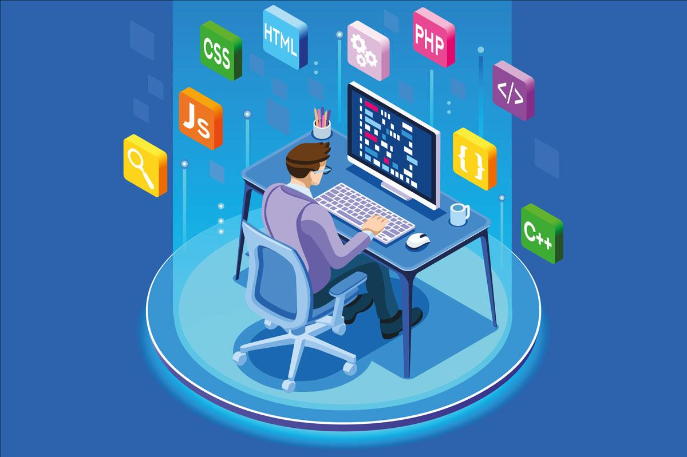
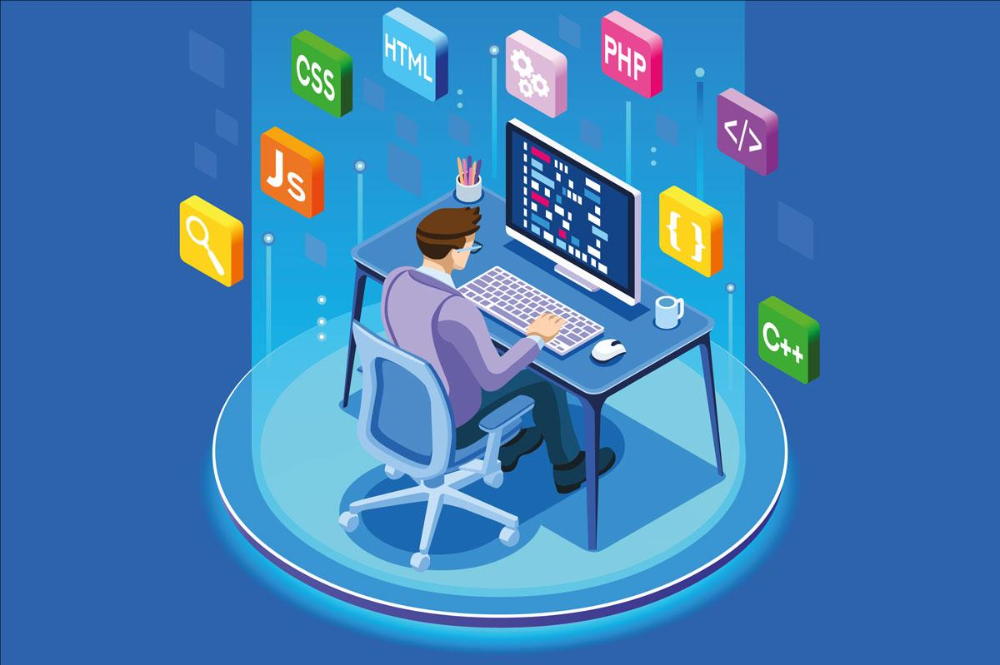

Onaymatik'te Yazılım Stajı Deneyimim
Üniversite 3. sınıfta yaz döneminde başladığım Onaymatik stajı, benim için yazılım dünyasının gerçek yüzünü tanımamı sağladı. Burada ilk defa ekip çalışması içinde kod yazma fırsatım oldu. Java ve HTML/CSS bilgimi gerçek projelere uyguladım, aynı zamanda yeni teknolojiler öğrenmem gerekti.
Gerçek sistemlerde hata ayıklamak, test yazmak ve geri bildirim almak hem zorlayıcı hem de geliştiriciydi. Bu staj bana sadece teknik değil aynı zamanda profesyonel hayata dair pek çok şey öğretti.
🛠️ Özellikle:
- İlk başta kod düzenine alışmakta zorlandım ama zamanla sistematik düşünmeyi öğrendim.
- Takım arkadaşlarımdan "code review" almak, bana yazılımcı bakış açısını öğretti.
- Kendi başıma bir hatayı bulup çözdüğümde motivasyonum inanılmaz arttı.
✅ Tavsiyem: Staja başlamadan önce basit projeler yaparak pratik kazanın. Staj sadece bilginizi göstermek değil, öğrenmeye ne kadar açık olduğunuzu göstermekle ilgili.